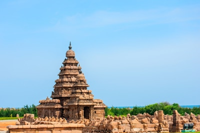

NAME: mahabalipuram

The Group of monuments at Mahabalipuram is a collection of 7th and 8th century religious monuments in the coast
al beach resort town of Mamallapuram and a UNESCO World Heritage site.[1][2][3] It is on the Coromandel Coast of the Bay of Bengal, about 60 kilometres (37 mi) south of Chennai, Tamil Nadu, India.[1]
The site has 40 ancient monuments and Hindu temples,[4] including one of the largest open-air rock reliefs in the world, th
e Descent of the Ganges or Arjuna's Penance.[1][

HOW TO REACH ?
Nearest Airport: mahabalipuram
Nearest Railway Station:mahabalipuram
Nearest Bus Stand: mahabalipuram